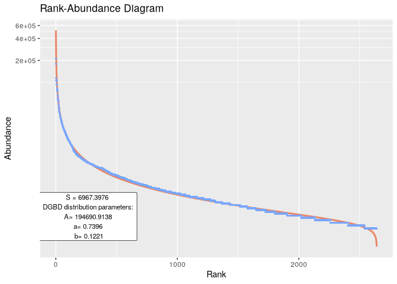
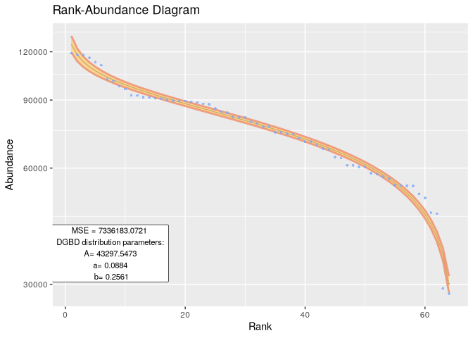
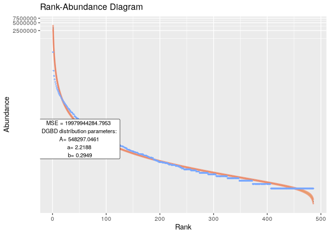
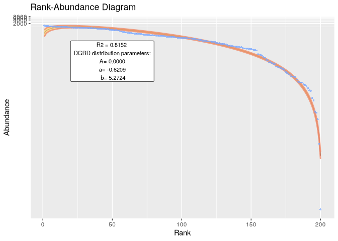
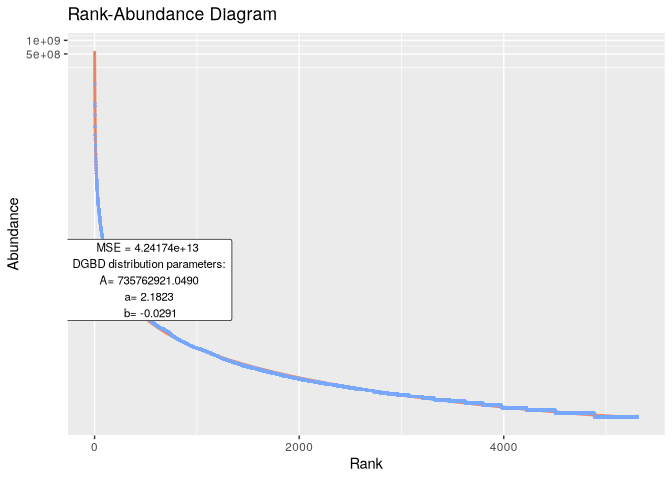
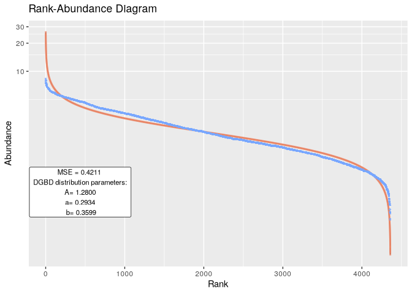
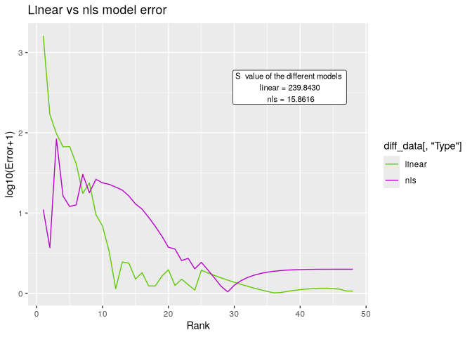

Citation
To cite this package:
Moedano-Vargas F, Alvarez-Martinez R (2024). DGBD: Discrete Generalized Beta Distribution Modeling and Plotting. R package version 0.0.0.9006, https://github.com/Fa-Moe/DGBD.
To obtain a BibTeX entry, you can run:
Description
Discrete Generalized Beta Distributions (DGBDs) provide a robust alternative for modeling Rank-Abundance Distributions. Traditional power-law distributions often offer accuracy within an intermediate range but struggle to capture the logarithmic behavior at the distribution’s tail ends. While additional parameters can sometimes enhance power-law models, DGBDs inherently offer a superior fit for these critical tail regions.
Beyond their applicability to Rank-Abundance Distributions, DGBDs are effective in modeling ordering distributions across a wide array of biological systems and disciplines. This versatility makes them an invaluable tool for researchers in fields such as ecology, demography, bibliometrics, and more. For an in-depth exploration of DGBDs, please refer to Martínez-Mekler et al. (2009) at https://doi.org/10.1371/journal.pone.0004791
DGBDs are characterized by three parameters: A, a, and b. This ‘R’ package facilitates fitting a DGBD to a given set of abundance data and reporting these parameters. It utilizes ‘ggplot2’ for visualizing the model.
Installation
Install the development version of DGBD like so:
devtools::install_github("Fa-Moe/DGBD")Usage
Quickly analyze data frames and phyloseq-class objects.
library(DGBD)
BC_report(df_abundance=DGBD::Billionaires, column = 2, show_stats = F, model_extra = "S")
Using custom data
Data in .csv files can be easily provided for analysis. A similar method can be used for .tsv files with utils::read.table().
example_path <- system.file("extdata", "EC_Codon.csv", package = "DGBD") #This is just a string of text with the path of the .csv file
example_data <- read.csv(example_path,header=TRUE,row.names=1) #Your file might or might not have headers and row names.
BC_report(example_data, column = 1)
#> [1] "The data fit the DGB distribution with parameters:"
#> A a b
#> 2.5 % 38795.90 0.10674700 0.2377527
#> 50 % 43297.55 0.08837031 0.2561294
#> 97.5 % 48321.54 0.06999362 0.2745061
#> [1] "And the fit has a MSE of:"
#> [1] 7336183
Extra examples
BC_report(df_abundance=DGBD::Citation_ISICatalogued, column = 2, show_stats = F,rank_threshold=1)

BC_report(df_abundance=DGBD::Weblinks, column=2, rank_threshold=4, confidence_interval=0.99)
#> [1] "The data fit the DGB distribution with parameters:"
#> A a b
#> 0.5 % 708982440 2.184956 -0.03184022
#> 50 % 735762921 2.182266 -0.02914983
#> 99.5 % 763554984 2.179575 -0.02645945
#> [1] "And the fit has a MSE of:"
#> [1] 4.24174e+13
BC_report(df_abundance=DGBD::MOMv3.3, column=7)
#> [1] "The data fit the DGB distribution with parameters:"
#> A a b
#> 2.5 % 1.209095 0.2976284 0.3556487
#> 50 % 1.280005 0.2933839 0.3598932
#> 97.5 % 1.355073 0.2891393 0.3641378
#> [1] "And the fit has a MSE of:"
#> [1] 0.4211116
Generally the nls method is better at fitting the values on the left of the graph, while performing worse on the right side of the graph. BC_compare() can be used to compare both methods given a data set. The goodness of fit tends to stay the same or get better when using the nls method because the extremes are approximated better, however, most mid and low values accumulate more error. This “spreading out” effect might not be desirable, in which case the default method should be used.
BC_compare(EC_Metabolite, column = 2,model_extra="S")[[1]]